Получить практические навыки по установке DVWA.
Открою github и зайду в репозиторий dvwa, скопирую ссылку.
Открою терминал, и с помощью cd, вхожу в директорию html, где сохраняются файлы локального хоста. В этой же директории клонирую репозиторий.
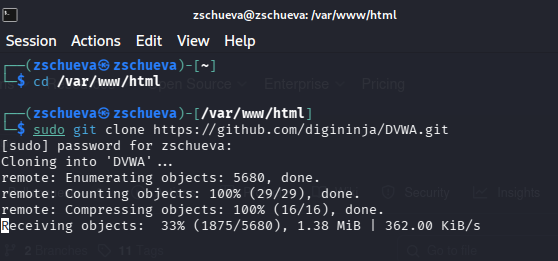
С помощью ls поверяю, что клонирование было успешно и потом разрешаю все права на все файлы в DVWA используя chmod -R 777
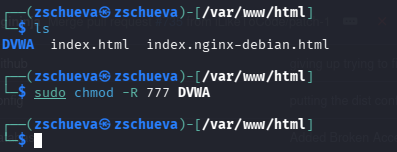
Проверяю работу и захожу в dvwa/config, чтобы настроить веб-приложение.
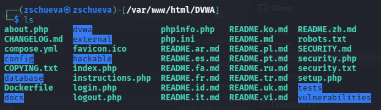
Далее копирую config.int.php который содержит конфигурацию приложения.
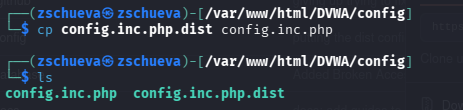
В этом файле изменяю пароль, имя пользователя на zschueva и сохраняю изменения.
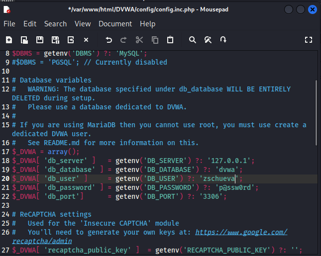
Запускаю mysql с помощью start mysql и проверяю используя status mysql.
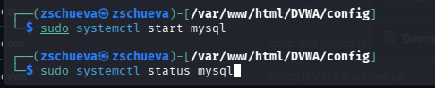
Далее вхожу в mmysql, используя mysql -u root -p
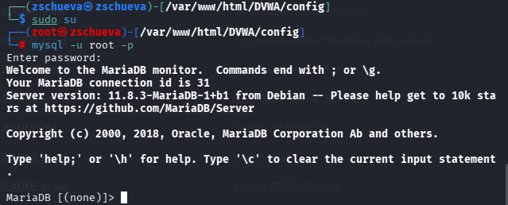
Создаю базу данных zschueva и нового пользователя используя create user ‘zschueva’@‘127.0.0.1’ identified by ‘password’. Используя эту команду, создала пользователя zschueva, работаюшего на сервер локального хоста (127.0.0.1) и пароль password.
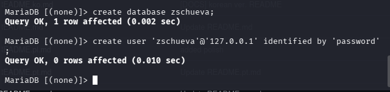
Разрешаю все права доступа этому пользователю к базе данных и завершаю работы.
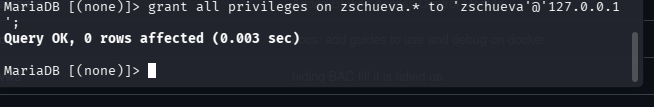
Запускаю сервер apache2.
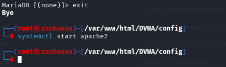
Вхожу в /etc/php/8.4.
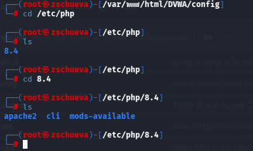
Включаю значения allow_url_fopen и allow_url_include в файле apache2/php.ini.
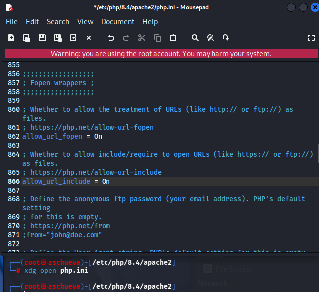
Перезапускаю сервер apache2 испоьзуя systemctl restart apache2.
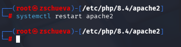
Открою 127.0.0.1./dvwa/setup.php в браузере.
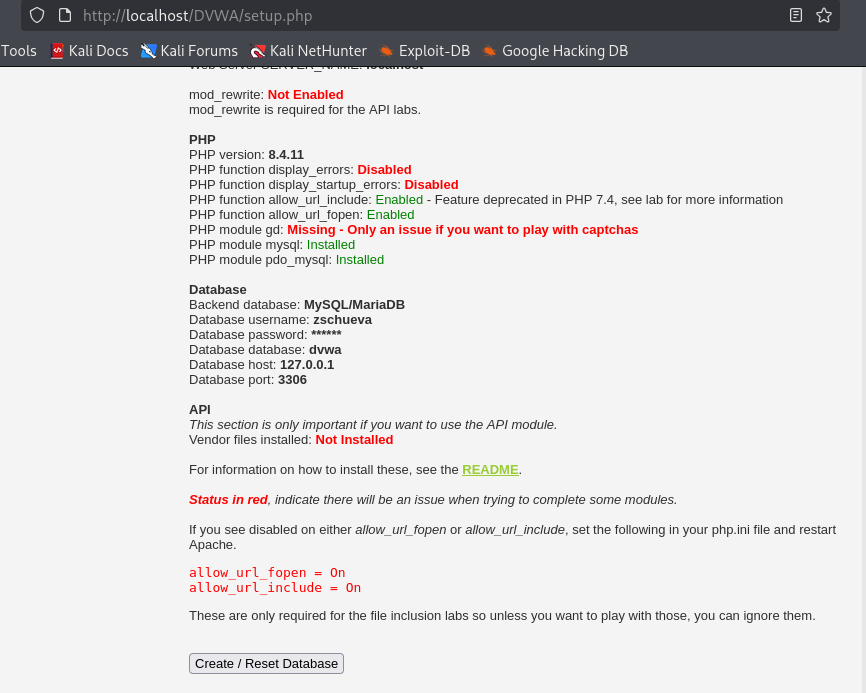
Нажимаю кнопку create/Reset database. Создается база данных и меня перенаправляют на страницу входа. Вхожу используя логин admin и пароль p@ssword.
Получила навыки по установке DVWA.
[Set up DVWA in Kali Linux][https://akshaygupta21.medium.com/how-to-setup-dvwa-in-kali-linux-e7c0dc272bba]